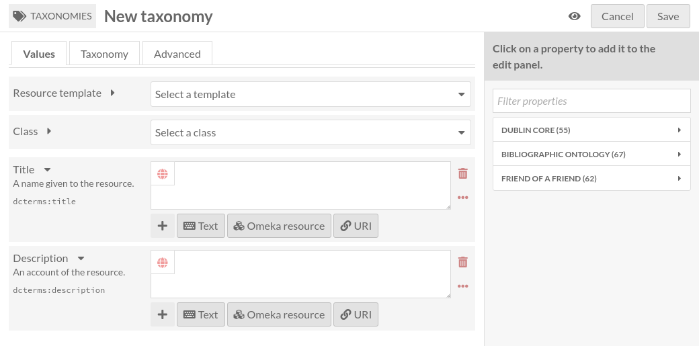

Taxonomies
A taxonomy is a group of taxonomy terms. It’s a way to build a controlled vocabulary in Omeka S.
A taxonomy is also an Omeka S resource (like items, item sets and media), which means:
it can be linked to items, item sets and media like any other Omeka S resource (it can be linked in annotations too);
it can be described like any other resource (resource template, class, properties, annotations);
it can have a thumbnail.
A taxonomy has a unique (among other taxonomies) identifier, called Code.
The Taxonomies tab
Taxonomies are listed in the Taxonomies tab (with the tags icon) in the left-hand navigation of the administrative dashboard.

This page is very similar to The Items tab. Please refer to this documentation for general information.
There are a few differences:
There is an additional column showing the taxonomy’s Code.
Taxonomies can be sorted by Code.
There is an additional icon to list taxonomy terms (tag).
Add a taxonomy
To add a new taxonomy, begin by selecting the the “Add new taxonomy” button.
Values
The Values tab is where you enter metadata, such as title, description, etc.
It is identical to The Items Values tab.
Taxonomy
The Taxonomy tab is where you enter the taxonomy’s unique identifier (Code)

Advanced
The Advanced tab is where you can select a thumbnail